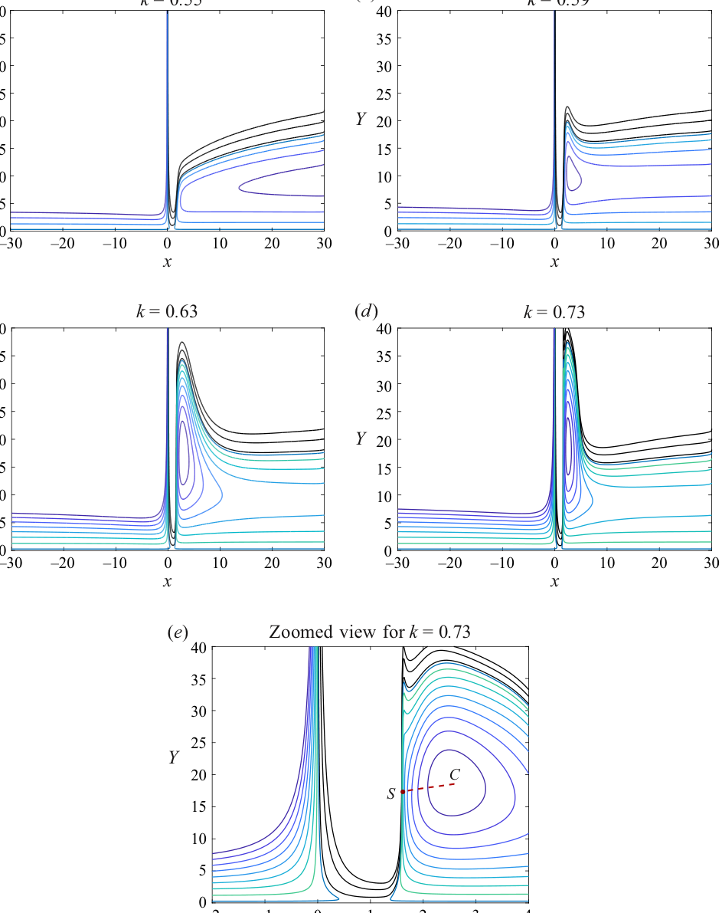
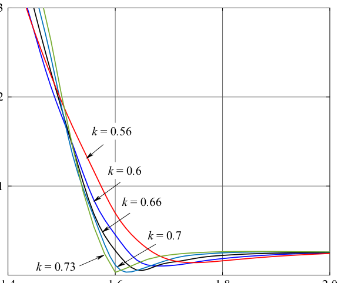
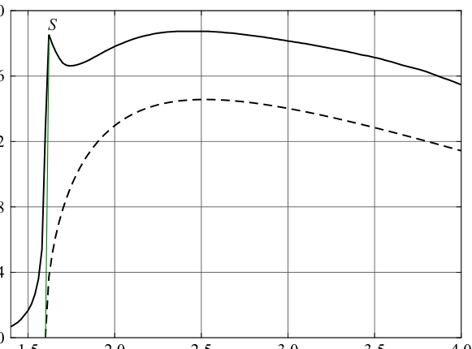
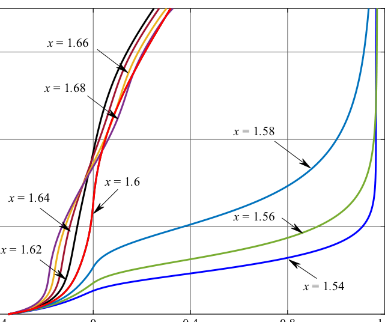

01中文摘要
研究翼型前缘边界层，翼型表面沿自身方向向上游滑移。分析在经典Prandtl边界层框架内进行，压力分布由外部无粘绕流给出。由于壁面附近始终存在逆流区，采用迎风有限差分近似导数求解边界层方程，并把计算域从上表面延伸到下表面。对一系列攻角计算，发现存在临界攻角，此时流动中出现Moore–Rott–Sears奇异性，并伴随奇异点处边界层突然增厚及其后闭合流线回流区的形成。奇异点紧后方及回流区内流动可视为无粘，因而可用Prandtl–Batchelor定理作理论建模，并与Bezrodnykh等偶极子算例的解释进行比较。
原始摘要（英文/原文）
This paper is concerned with the boundary layer on the leading edge of an aerofoil with the aerofoil surface sliding parallel to itself in the upstream direction. The flow analysis is conducted in the framework of the classical Prandtl formulation with the pressure distribution given by the solution for the outer inviscid flow. Since a reverse flow region is always present near the wall, a numerical method, where the derivatives were approximated by the windward finite differences, was used to solve the boundary-layer equations. We were interested in the flow behaviour on the upper surface of the aerofoil, but to calculate the boundary-layer equations, we had to extend the computational domain from the upper surface of the aerofoil to the lower surface. The calculations were performed for a range of angles of attack, and it is found that there exists a critical value of the angle of attack for which the Moore–Rott–Sears singularity forms in the flow. This is accompanied by an abrupt thickening of the boundary layer at the singular point and the formation of a recirculation region with closed streamlines behind this point. We further found that the flow immediately behind the singular point and in the recirculation region could be treated as inviscid, which allowed us to use the Prandtl–Batchelor theorem for theoretical modelling of the flow. A similar formulation was used earlier by Bezrodnykh et al. (Comput. Maths Math. Phys. vol. 63, 2023, pp. 2359–2371). These authors considered the boundary-layer flow on a flat plate with the pressure gradient created by a dipole situated some distance from the plate. They also found that there exists a critical value of the dipole strength for which a singularity forms in the boundary layer. However, their interpretation of the flow behaviour differs significantly from what we observe in our study.
02阅读说明
类型：期刊论文（J. Fluid Mech. 1011, A49 (2025)，25页），理论+数值的边界层奇异性研究。材料含25页全文和13幅抓取图件；文本层完整，公式(2.1)–(5.78)与附录(A1)–(A13)可读，图内曲线仅能据正文描述。信息完整度较高：问题提法、边界层方程、数值格式、临界角、奇点结构、Prandtl–Batchelor模型与自相似指数均有；但网格步长、xmax/Ymax、收敛判据与雷诺数未给出，定量曲线需从图读取。 文章类型：期刊
03一句话核心与三句话摘要
上滑壁边界层在临界攻角处形成MRS奇点，其后为常涡量回流区，标度指数α=1/5、β=-3/10。
- 上滑壁边界层分离的拓扑长期不清楚：壁面自身把近壁流体带向上游，分离点不再位于物面。 AI概括
- 作者对抛物前缘、Uw=-0.35的二维不可压Prandtl边界层用迎风差分与Thomas算法求解，并逐步增大攻角参数k。 原文明确
- 在k略大于0.73时出现Moore–Rott–Sears奇点，S后为Prandtl–Batchelor常涡量回流区；自相似分析给出α=1/5、β=-3/10，零u线与回流区外边界随(x-xs)^β变化。 AI概括
04核心内容清单
| 要点 | 类型 | 重要性 | 原文依据 | 属性 |
|---|---|---|---|---|
| Uw=-0.35时，临界攻角参数kc略大于0.73；k→kc时流线在零u线上的S点汇聚，形成Moore–Rott–Sears奇点。 | 数值发现 | A | p10，Fig. 6，Fig. 7 | 原文明确 |
| 沿零u线的剪应力在S前出现最小值，k=0.56–0.73逐渐减小，kc时为零，满足u=∂u/∂Y=0；S处为顺压dp/dx<0。 | 数值诊断 | A | p10，Fig. 7 | 原文明确 |
| k=0.55时回流区开放；k=0.59、0.63、0.73时形成闭流线回流区。 | 数值发现 | A | p9，Fig. 6a–d | 原文明确 |
| k=0.73时回流区内剪应力近似常值，约0.0255，符合Prandtl–Batchelor常涡量图像。 | 数值结果 | A | p10–12，Fig. 8 | 原文明确 |
| 式(5.11)给出的零u线理论在x∈[1.9,4.0]与数值形状一致但偏低，可加粘性层厚度修正；x∈[1.6,1.9]（S后）不适用。 | 理论-数值对比 | A | p13，Fig. 9 | 原文明确 |
| S后局部自相似解给出α≈1/5、β≈-3/10；零u线Z与外边界D均按(x-xs)^β变化，D=2Z。 | 理论推导 | A | p14–18，Eqs. (5.23)–(5.47) | 原文明确 |
| von Mises分析把S后流动化为Kummer方程，由特征值条件得α=1/(2m+1)，允许1/3、1/5、1/7、…，取α=1/5。 | 理论推导 | A | p18–21，Eqs. (5.66)–(5.78) | 原文明确 |
| 奇点S位于Prandtl–Batchelor区之前，而不属于该常涡量区。 | 理论判断 | A | p22，第6节；p11 | 原文明确 |
| Fig. 12显示x=1.58与x=1.6之间u剖面急剧变化，可能是间断，但作者未定论。 | 数值观察 | B | p22，Fig. 12 | 原文明确 |
| 运动壁Blasius解仅当Uw>-0.354存在，并呈迟滞；下表面边界层无奇点、保持附着。 | 理论/数值结果 | B | p6–7，Fig. 5；p10 | 原文明确 |
| 模型限于二维定常不可压、单一Uw=-0.35、单一抛物前缘；网格、计算域、收敛判据与Re未给出，PB区为近似。 | 材料局限 | C | 全文 | AI概括 |
05引言：研究问题与领域缺口
第1节（p2–4）从Prandtl边界层与分离定义出发：无滑移使壁面速度为零，逆压梯度使近壁流体停滞并回流，分离点由τw=μ∂u/∂y|0=0定义（Eq. 1.1）。对非定常分离，Sears、Moore、Rott指出在随分离点移动的坐标系中流动可视为准定常，但物面不再静止；若分离点向上游移动，物面向下游运动，近壁流体被粘性带向下游，回流区不能从物面开始，分离点位于边界层内部，满足Moore–Rott–Sears条件u=∂u/∂y=0（Eq. 1.2）（p3）。上滑壁更复杂：无滑移使近壁流体在分离前就随壁上滑。本文以薄翼前缘为例，目标是澄清上滑壁边界层分离的拓扑（p3–4）。作者预告：存在临界攻角；临界前解正则、边界层附着；临界时MRS奇点（主要在回流区）出现，边界层在奇点处突然增厚，其后形成闭流线回流区；S后流动可视为无粘，可用Prandtl–Batchelor定理建模；附录把Hiemenz驻点解推广到运动壁（p4）。与Bezrodnykh等(2023)的平板+偶极子问题对比，后者也发现临界偶极子强度与MRS奇点，但流动行为与本文显著不同（p4）。
06流动条件与几何构型
| 项目 | 数值/描述 | 依据 | 备注 |
|---|---|---|---|
| 流动类型 | 二维、定常、不可压Prandtl边界层，外流由无粘解给定 | p4–5，2.1–2.2节 | |
| 几何 | 无限抛物前缘Y'=±√(2X')；上表面从驻点延伸到下游，计算域同时包含上、下表面 | p4–5，Fig. 1，Fig. 2 | |
| 攻角参数k | 从0（对称流）逐步增大到0.73，临界kc略大于0.73 | p8–10，Fig. 6 | |
| 工况k=0.55 | 上表面回流区开放，流线型变化不大；Uw=-0.35 | p9，Fig. 6a | |
| 工况k=0.59 | 回流区鼻部出现鼓包，开始形成闭流线回流区；Uw=-0.35 | p9，Fig. 6b | |
| 工况k=0.63 | 闭流线回流区继续增大；Uw=-0.35 | p9，Fig. 6c | |
| 工况k=0.73 | 闭流线回流区；用于零u线形状与剪应力详细分析；Uw=-0.35 | p9–11，Fig. 6d，Fig. 8 | |
| 壁面速度Uw | Uw=-0.35（向上游滑动；负号表示与x正方向相反） | p8，4节 | |
| 临界壁速Uwc | Uw=-0.354（运动壁Blasius解存在性的临界值） | p6–7，Fig. 5 | |
| 奇点位置 | xs≈1.6（零u线上的S点） | p10，Fig. 6e，Fig. 8 | |
| 外流速度 | Ue=(Y'+k)/√(Y'^2+1)；Ue→1（x→∞），Ue→-1（x→-∞） | p4，Eqs. (2.1)，(2.8)，(2.14) | |
| 计算域 | x∈[-xmax,xmax]，Y∈[0,Ymax]；具体xmax、Ymax文中未提及 | p7，Eq. (3.1) | |
| 网格 | x、Y方向均匀网格，x_i=iΔx、Y_j=jΔY；Δx、ΔY及网格数文中未提及 | p7，Eq. (3.2) | |
| Reynolds数 | 文中未提及（方程已无量纲化） | p5，Eqs. (2.5) | |
| 壁面边界 | 无滑移：u=Uw、V=0；外缘u=Ue(x) | p5，Eq. (2.6) | |
| 初始/延续 | 从k=0对称流开始，逐步增大k，以上一步收敛解为初值 | p8，4节 | |
| 回流区涡量 | ω≈0.0255（沿零u线近似常值） | p10–12，Fig. 8 | |
| S处压力梯度 | 顺压dp/dx<0；回流中心C处dp/dx=0；C右侧为逆压 | p10–11，Fig. 7 | |
| 下表面 | 边界层保持附着，无奇点 | p10，4节 | |
| 工作流体 | 不可压流体；密度、粘度具体值文中未提及 | p4–5，2.2节 |
07核心现象与关键参数
| 参数 | 定义 | 数值 | 关系/说明 | 依据 |
|---|---|---|---|---|
| 壁面速度Uw | 物面切向速度，负值表示向上游滑动 | -0.35（主算例） | p8，4节 | |
| 临界壁速Uwc | 运动壁Blasius相似解存在的下限 | -0.354 | p6–7，Fig. 5 | |
| 临界攻角参数kc | 出现MRS奇点的k值 | 略大于0.73；文中未给更精确值 | p10，4节 | |
| 奇点位置xs | 零u线上u=∂u/∂Y=0的点 | ≈1.6 | p10，Fig. 6e，Fig. 8 | |
| 自相似指数α | Ψ̃-Ψs∝x̃^α；也控制V的奇性 | 1/5 | p17–18，Eq. (5.27)，Eq. (5.78) | |
| 自相似指数β | 法向尺度Ỹ∝x̃^β；Z、D∝(x-xs)^β | -3/10 | p17–18，Eq. (5.28) | |
| 回流区涡量ω | ω=∂u/∂Y=dH/dΨ，沿零u线近似常值 | ≈0.0255 | p11，Eq. (5.3)，Fig. 8 | |
| 无量纲常数η̃d | f̃=0时对应的η̃值，决定零u线位置 | ≈0.8797 | p17，Eq. (5.42) | |
| λ | S后局部压力梯度参数，dp/dx̃=-λ+…，λ>0 | 文中未给数值 | p14–15，Eq. (5.22d)，Eq. (5.29) | |
| f(0) | 零u线上自相似函数值，f(0)<0 | 文中未给数值 | p15，Eq. (5.30) | |
| ps、Ψs | 奇点处的压力和分界流线值 | 文中未给数值 | p11，Eq. (5.5) | |
| 零u线Z(x) | S后Y=Z(x)给出零u线；PB区内Z=(1/ω)√(2ps-2p) | S后Z∝(x-xs)^β | p11–18，Eqs. (5.11)，(5.46) | |
| 回流区外边界D(x) | 零u线上方的分界流线位置 | PB区D=(2/ω)√(2ps-2p)；S后D=2Z | p11–18，Eqs. (5.16)，(5.47) | |
| Ue最大值 | 外流速度在Y'=1/k处的极大值 | √(1+k²) | p4，Eq. (2.2) |
08方法与数据
2.1节（p4–5）：不可压流绕无限抛物前缘Y'=±√(2X')，外流切向速度Ue=(Y'+k)/√(Y'^2+1)（Eq. 2.1），驻点O在Y'=-k，k为攻角参数；Ue最大点在Y'=1/k，最大值√(1+k²)（Eq. 2.2；文本层根号缺失，按式(2.1)求极值应为√(1+k²)）。沿物面弧长x满足dY'/dx=1/√(1+Y'^2)（Eq. 2.4），初值Y'(0)=-k，数值积分后由Eq. (2.1)得Ue(x)。2.2节（p5–7）：求解定常二维Prandtl边界层Eqs. (2.5)，边界条件u=Ue(x) at Y=∞，u=Uw、V=0 at Y=0（Eq. 2.6），Uw<0。x→∞时Ue→1，取Ψ=√x f(η)、η=Y/√x（Eqs. 2.9–2.10），得Blasius方程f'''+½ff''=0（Eq. 2.12），边界条件f(0)=0、f'(0)=Uw、f'(∞)=1（Eq. 2.13）；数值解仅当Uw>-0.354存在，并呈迟滞（Fig. 5）。下表面x→-∞时Ue→-1，取Ψ=-√(-x)f(η)、η=Y/√(-x)（Eqs. 2.15–2.16），u=-f'，仍满足同一Blasius方程（Eq. 2.18），边界条件f'(0)=-Uw（Eq. 2.19），对全部负Uw有解。3节（p7–8）：矩形域x∈[-xmax,xmax]、Y∈[0,Ymax]，均匀网格（Eqs. 3.1–3.2）；∂u/∂x用迎风差分（u>0取后向、u<0取前向），∂u/∂Y与∂²u/∂Y²用中心差分（Eq. 3.3）；每条网格线上形成三对角方程组（Eq. 3.4），系数Eq. (3.5)，用Thomas算法（Eqs. 3.6–3.8）求解，再以连续性方程更新V，逐线扫描并欠松弛迭代至收敛（p8）。4节（p8）：取Uw=-0.35（|Uw|略小于临界0.354），从k=0对称流开始逐步增大k，以上一步结果为初值。
| 项目 | 内容 | 依据 | 备注 |
|---|---|---|---|
| 研究类型 | 理论分析（Prandtl–Batchelor、局部自相似、von Mises/Kummer）与有限差分数值实验 | p1，Abstract；p4–8 | |
| 外流求解 | 无限抛物前缘的无粘解，Ue=(Y'+k)/√(Y'^2+1)；沿弧长积分dY'/dx=1/√(1+Y'^2) | p4–5，Eqs. (2.1)–(2.4) | |
| 边界层方程 | 定常二维Prandtl方程：u∂u/∂x+V∂u/∂Y=Ue dUe/dx+∂²u/∂Y²，∂u/∂x+∂V/∂Y=0 | p5，Eqs. (2.5a,b) | |
| 边界条件 | Y→∞：u=Ue(x)；Y=0：u=Uw、V=0 | p5，Eq. (2.6) | |
| 远场相似解 | x→∞取Ψ=√x f(η)、η=Y/√x，得Blasius方程；x→-∞取Ψ=-√(-x)f(η)、η=Y/√(-x) | p5–7，Eqs. (2.9)–(2.19) | |
| 计算域与网格 | 矩形域x∈[-xmax,xmax]、Y∈[0,Ymax]；x、Y均匀网格 | p7，Eqs. (3.1)–(3.2) | |
| 离散格式 | ∂u/∂x迎风差分（按u符号取上游）；∂u/∂Y、∂²u/∂Y²中心差分 | p7，Eq. (3.3) | |
| 代数求解 | 每条网格线形成三对角方程组，Thomas算法追赶；由连续性方程更新V | p7–8，Eqs. (3.4)–(3.8) | |
| 迭代 | 逐线扫描并欠松弛，直至收敛；具体松弛因子与判据文中未提及 | p8，3节 | |
| 参数延续 | Uw=-0.35固定，k从0逐步增大到0.73，以上一步解为初值 | p8，4节 | |
| 奇点诊断 | 沿零u线Y=Z(x)提取∂u/∂Y；k增大时其最小值趋于零；同时检查压力梯度符号 | p10，Fig. 7 | |
| Prandtl–Batchelor建模 | 回流区用½u²+p=H(Ψ)、dH/dΨ=ω，积分得零u线与外边界 | p11–14，Eqs. (5.1)–(5.16) | |
| 局部自相似 | 以S为原点，设Ψ̃=Ψs+x̃^αf(η)、η=Ỹ/x̃^β；量级平衡与数值拟合定α、β | p14–18，Eqs. (5.17)–(5.47) | |
| von Mises/Kummer | 变换到(Ψ̃,x̃)变量，得F方程；在粘性层内化为Kummer方程，由特征值定α | p18–21，Eqs. (5.48)–(5.78) | |
| 附录精确解 | 把Hiemenz驻点解推广到运动壁，设Ψ=x f0(Y)+f1(Y)，得f0、f1方程 | p23–24，Eqs. (A1)–(A13) |
09核心推导与公式
先数值确认上滑壁边界层在临界攻角处出现MRS奇点，再按区域分解：S后的回流区在边界层尺度上渐近大，可用Prandtl–Batchelor常涡量区描述，从而由Bernoulli方程积分出零u线和回流区外边界；S邻域用局部自相似展开，由对流项与压力梯度平衡定α、β；最后用von Mises变换把S后流动化为Kummer方程，由特征值条件独立确认α=1/5。
关键假设
- 二维、定常、不可压Prandtl边界层；外流无粘，物面为无限抛物前缘。
- Uw=-0.35固定，k从0连续增大；临界附近解可由数值延拓得到。
- S后回流区在边界层尺度上渐近大，流动几乎无粘，可用Prandtl–Batchelor常涡量区近似（作者称§5.1为近似）。
- 回流区内涡量近似常值ω≈0.0255，Bernoulli函数H(Ψ)沿流线守恒；分界流线为Ψ=Ψs，下端落在Y=0。
- S邻域压力梯度可展开为dp/dx̃=-λ+…，λ>0；局部自相似指数满足α<3/4，粘性项在主流区可忽略。
- 零u线上方u>0、下方u<0；零u线法向坐标用Z(x)表示，S后Z∝(x-xs)^β。
- von Mises变换后，粘性层内解可用Kummer合流超几何函数表示；由正则性/极点条件选取离散特征值。
推导过程
无限抛物前缘的无粘切向速度由Eq. (2.1)给出，k控制驻点位置与攻角；沿弧长积分Eq. (2.4)得到Ue(x)。上表面x→∞时Ue→1，下表面x→-∞时Ue→-1，分别对应Eqs. (2.8)、(2.14)。壁面以Uw<0向上游滑动，外缘u=Ue、壁面u=Uw、V=0。
用定常二维Prandtl方程Eqs. (2.5)描述边界层，边界条件Eq. (2.6)含运动壁Uw。远场x→∞取相似变量Eqs. (2.9)–(2.10)，得Blasius方程Eq. (2.12)与边界条件Eq. (2.13)；数值解仅当Uw>-0.354存在并呈迟滞。下表面用Eqs. (2.15)–(2.19)的镜像形式，对全部负Uw有解。
在均匀矩形网格上，∂u/∂x按u符号取上游差分，∂u/∂Y与∂²u/∂Y²取中心差分（Eq. 3.3）；每条网格线形成三对角方程组Eq. (3.4)，用Thomas追赶Eqs. (3.6)–(3.8)求解，再由连续性方程更新V，逐线欠松弛迭代。
从k=0对称流逐步增大k；k=0.55回流区开放，k=0.59、0.63、0.73出现闭流线回流区，kc略大于0.73。沿零u线Y=Z(x)提取剪应力∂u/∂Y，其最小值随k增大而减小，kc时为零，满足MRS条件Eq. (1.2)；S处压力梯度为顺压dp/dx<0。
S后回流区在边界层尺度上渐近大，忽略粘性，Bernoulli方程Eq. (5.1)沿流线成立；对Y求导并用∂Ψ/∂Y=u，得dH/dΨ=∂u/∂Y=ω（Eq. 5.3），ω≈0.0255为常值。积分得H=ps+ω(Ψ-Ψs)（Eq. 5.5）与u的平方根表达式（Eq. 5.6）。零u线下方取负支积分得Eq. (5.10)，分界流线Ψ=Ψs且Y=0给出Z(x)（Eq. 5.11）；上方取正支得Eq. (5.15)与外边界D(x)（Eq. 5.16）。
以S为原点作坐标与速度变换Eqs. (5.17)–(5.18)，设相似解Eqs. (5.19)–(5.20)。对流项与压力梯度同阶给出2α-2β-1=0（Eq. 5.23）；零u线上V的标度Eq. (5.24)与数值拟合Eq. (5.26)给出α≈1/5、β≈-3/10。粘性项随x̃→0消失，f满足Eq. (5.29)及边界条件Eq. (5.30)；仿射化后得Eq. (5.32)，一阶积分得Eq. (5.38)，取负支（Eq. 5.40），η̃d≈0.8797，从而Z、D的标度如Eqs. (5.46)–(5.47)。
把边界层方程写成von Mises形式Eq. (5.48)，设Eqs. (5.49)–(5.50)的相似解；在α<3/4下粘性项可忽略，F满足Eq. (5.53)，解为Eq. (5.55)。当Ψs-Ψ̃=O(x̃^{3/4})时进入粘性层，展开后得到Q的方程Eq. (5.66)；令Q=ζW(z)、z=Bζ²化为Kummer方程Eq. (5.68)，其参数为Eq. (5.69)，通解Eq. (5.70)。取C2=0保证正则性，M(a,b,z)的渐近式要求a=-m（Eq. 5.75），故1/α=2m+1，允许α=1/3、1/5、1/7、…；α=1不满足α<3/4而舍去，最终取α=1/5。
把Hiemenz驻点解推广到运动壁，设Ψ=x f0(Y)+f1(Y)（Eq. A4），得f0、f1的常微分方程组Eqs. (A6a,b）；由f1'=λf0''（Eq. A8）与λ=Uw/f0''(0)（Eq. A9），最终Ψ=x f0(Y)+λf0'(Y)（Eq. A13）。该解用于说明驻点附近运动壁的解析结构。
适用边界：Prandtl–Batchelor区在边界层尺度上渐近大是近似，作者未证明其严格成立；自相似解只适用于S之后，不能延拓到S之前；有限差分在S附近失去精度，无法复现式(5.46)的奇异性；只研究二维定常不可压、单一Uw=-0.35与单一抛物前缘；未给网格、计算域、收敛判据与Re；λ、f(0)、ps、Ψs无数值；kc只给“略大于0.73”；与Bezrodnykh等(2023)的β=+1/6只能定性比较；无实验验证；式(5.67)中B的具体表达式受文本层排版限制，无法确认。
10结果：主要发现与关键证据
4节（p8–11，Figs. 6–8）：k=0.55时上表面回流区开放、流线型变化不大；k增大后回流区“鼻部”出现鼓包并迅速长大，k=0.59、0.63、0.73时形成闭流线回流区（Fig. 6a–d）。临界值kc略大于0.73；奇点S位于零u线SC上，定义为Y=Z(x)；k→kc时流线在S汇聚（Fig. 6e）。沿零u线的剪应力∂u/∂Y在S前发展出最小值，k=0.56–0.73逐渐减小，kc时为零，满足MRS条件（Eq. 1.2）；S处压力梯度为顺压dp/dx<0（p10，4节）。Uw=-0.35、k=0.73时零u线形状与沿其剪应力见Fig. 8：回流区内剪应力近似常值（约0.0255），符合Prandtl–Batchelor常涡量结论（p10–12）。由零u线上的无粘动量方程V∂u/∂Y=-dp/dx（Eq. 4.1）：SC上u=0、上方u>0、V>0，故∂u/∂Y>0，要求dp/dx<0；SC向右延伸至回流中心C右侧时V<0，要求dp/dx>0，故C对应零压梯度（p11）。5.1节（p11–14，Fig. 9）：回流区用Bernoulli方程½u²+p=H(Ψ)（Eq. 5.1），得dH/dΨ=∂u/∂Y=ω（Eq. 5.3），ω≈0.0255；积分H=ps+ω(Ψ-Ψs)（Eq. 5.5），得u=±√(2ω(Ψ-Ψs)+2ps-2p)（Eq. 5.6）。零u线下方取负号，积分得Y=Z-(1/ω)√(2ω(Ψ-Ψs)+2ps-2p)（Eq. 5.10）；分界流线Ψ=Ψs且下端Y=0给出Z(x)=(1/ω)√(2ps-2p(x))（Eq. 5.11）；上方对称得Y=Z+(1/ω)√(...)（Eq. 5.15），外边界D(x)=(2/ω)√(2ps-2p)（Eq. 5.16）。Fig. 9显示x∈[1.9,4.0]理论曲线与数值曲线形状一致但偏低（可加粘性层厚度修正），x∈[1.6,1.9]（S后）不适用，因为S在Prandtl–Batchelor区之外（p13）。5.2节（p14–18，Figs. 10–11）：以S为原点取x̃=x-xs、Ỹ=Y-Z(x)（Eq. 5.17），坐标与速度变换（Eq. 5.18），设Ψ̃=Ψs+x̃^α f(η)、η=Ỹ/x̃^β（Eqs. 5.19–5.20）；由对流项与压力梯度同阶得2α-2β-1=0（Eq. 5.23）；零u线上Ṽ=x̃^{α-1}(-αf(0))（Eq. 5.24），数值拟合lnṼ=-0.82lnx̃+C（Eq. 5.26）给出α≈1/5（Eq. 5.27）、β≈-3/10（Eq. 5.28）；粘性项随x̃→0消失，流动无粘。f满足½f'^2-αff''=λ（Eq. 5.29），边界f=f(0)、f'=0（Eq. 5.30）；仿射变换后得Eq. (5.32)，一阶积分得(df̃/dη̃)²=2(1-|f̃|^{1/α})（Eq. 5.38），取负号（Eq. 5.40）数值解见Fig. 11；η̃d≈0.8797（Eq. 5.42），零u线Z=√(|f(0)|/λ)η̃d(x-xs)^β（Eq. 5.46），外边界D=2Z（Eq. 5.47）。5.3节（p18–21）：用von Mises变量（Eq. 5.48），设ũ=x̃^{1/2}F(ξ)、ξ=(Ψ̃-Ψs)/x̃^α（Eqs. 5.49–5.50）；在α<3/4下粘性可忽略，F满足½F²-αξFF'=λ（Eq. 5.53），解F=±√(2λ(1-|ξ/ξ0|^{1/α}))（Eq. 5.55）；当Ψs-Ψ̃=O(x̃^{3/4})时出现粘性层，导出Kummer方程（Eqs. 5.63–5.69）；由a=-m、Γ(a)极点得特征值1/α=2m+1（Eq. 5.76），α=1不满足α<3/4而舍去，允许α=1/3,1/5,1/7,…（Eq. 5.77），取α=1/5（Eq. 5.78）。6节（p21–22，Fig. 12）：在S两侧x=1.54–1.68的u(Y)剖面在x=1.58与1.6之间发生急剧变化，可能是间断；作者引用Ruban & Vonatsos (2008)的边界层方程间断解。附录（p23–24，Fig. 13）：把Hiemenz驻点解推广到运动壁，设Ψ=x f0(Y)+f1(Y)（Eq. A4），得f0'''+f0f0''-f0'^2+1/(1+k²)²=0（Eq. A6a）与f1'''+f0f1''-f0'f1'=0（Eq. A6b），f1'=λf0''（Eq. A8），λ=Uw/f0''(0)（Eq. A9），最终Ψ=x f0+λf0'（Eq. A13）。
| 发现 | 证据 | 证据类型 | 强度 | 位置 | 属性 |
|---|---|---|---|---|---|
| Uw=-0.35时，临界攻角参数kc略大于0.73；k→kc时流线在S点汇聚，形成MRS奇点。 | k=0.73流线图与k→kc的汇聚趋势；零u线剪应力最小值趋于零 | 数值发现 | 强 | p10，Fig. 6e，Fig. 7 | 原文明确 |
| 沿零u线的剪应力在S前出现最小值，k=0.56–0.73逐渐减小，kc时为零，满足u=∂u/∂Y=0。 | Fig. 7给出不同k下∂u/∂Y沿零u线的分布 | 数值诊断 | 强 | p10，Fig. 7 | 原文明确 |
| S处压力梯度为顺压dp/dx<0；零u线延伸到回流中心C右侧时需逆压，C对应零压力梯度。 | 零u线上无粘动量方程V∂u/∂Y=-dp/dx与V的符号 | 理论/数值判断 | 强 | p10–11，4节，Eq. (4.1) | 原文明确 |
| k=0.55时回流区开放；k=0.59、0.63、0.73时形成闭流线回流区。 | Fig. 6a–d的流线拓扑 | 数值发现 | 强 | p9，Fig. 6a–d | 原文明确 |
| k=0.73时回流区内剪应力近似常值，约0.0255，符合Prandtl–Batchelor常涡量结论。 | Fig. 8沿零u线的剪应力在回流区近乎水平 | 数值结果 | 强 | p10–12，Fig. 8 | 原文明确 |
| 式(5.11)的零u线理论在x∈[1.9,4.0]与数值形状一致但偏低；x∈[1.6,1.9]不适用。 | Fig. 9理论曲线与数值曲线对比；S后曲线急剧下降 | 理论-数值对比 | 中 | p13，Fig. 9 | 原文明确 |
| S后自相似解给出α≈1/5、β≈-3/10；Z、D∝(x-xs)^β，D=2Z。 | 式(5.23)–(5.28)与(5.46)–(5.47) | 理论推导 | 强 | p14–18，Eqs. (5.23)–(5.47) | 原文明确 |
| von Mises分析给出特征值1/α=2m+1，允许α=1/3、1/5、1/7、…，取α=1/5。 | Kummer方程Eq. (5.68)与a=-m条件Eq. (5.75) | 理论推导 | 强 | p18–21，Eqs. (5.66)–(5.78) | 原文明确 |
| 奇点S位于Prandtl–Batchelor区之前，不属于该常涡量区。 | S处剪应力为零且位于回流区前方，常涡量Bernoulli关系(5.5)在S邻域不适用（p13）；PB定理要求闭流线 | 理论判断 | 强 | p11；p22，第6节 | 原文明确 |
| x=1.58与x=1.6之间u剖面急剧变化，可能是间断，但作者未定论。 | Fig. 12的x=1.54–1.68速度剖面序列 | 数值观察 | 中 | p22，Fig. 12 | 原文明确 |
| 运动壁Blasius解仅当Uw>-0.354存在并呈迟滞；下表面边界层无奇点、保持附着。 | Fig. 5的解支与迟滞；下表面计算结果 | 理论/数值结果 | 强 | p6–7，Fig. 5；p10 | 原文明确 |
11机制解释与论证链
上滑壁的粘性拖曳使近壁流体向上游运动，与逆压梯度造成的减速相遇，近壁速度剖面出现最小值并回流；随攻角参数k增大，回流区在边界层内形成鼓包并发展为闭流线回流区。k达到kc时，流线在零u线上的S点汇聚，剪应力∂u/∂Y沿零u线的最小值降为零，满足MRS条件u=∂u/∂Y=0，边界层在S处突然增厚。S后流动几乎无粘，回流区按Prandtl–Batchelor常涡量（ω≈0.0255）描述；S位于该常涡量区之前，其邻域由顺压梯度驱动，局部自相似平衡给出α=1/5、β=-3/10。上述为原文明确结论与AI概括；S前解如何延拓、间断的本质仍未解决。
12讨论：结论、贡献与局限
作者把结果解释为：上滑壁持续把近壁流体带向上游，逆压梯度使其减速、转向，形成回流区；随k增大回流区鼓包、闭流线化，最终在S处流线汇聚、剪应力为零，形成MRS奇点，边界层突然增厚（p4、p10）。S后流动“几乎无粘”，可用Prandtl–Batchelor常涡量区描述；但S本身不在该区内，而在其前方，因此不能用常涡量Bernoulli关系描述S邻域（p11、p22）。局部自相似分析给出α=1/5、β=-3/10，零u线与外边界随(x-xs)^β衰减；von Mises分析从特征值问题独立确认α=1/5（p14–21）。与Bezrodnykh等(2023)相比，两者都得到MRS奇点，但后者β=+1/6，本文β为负，理论描述显著不同（p22）。局限：Prandtl–Batchelor定理要求回流区在边界层尺度上渐近大，作者明确称§5.1为“近似”（p12）；自相似解只适用于S之后，尚不能延拓到S之前（p22）；有限差分数值在S附近失去精度，无法复现式(5.46)的奇异性（p18）；二维定常不可压、单一Uw=-0.35，未与实验直接对比；网格、域尺寸与收敛判据未给出。
作者结论
作者结论（p21–22）：以薄翼前缘上滑壁为例，在经典Prandtl框架内数值求解边界层，发现存在临界攻角；临界前解正则、边界层附着，临界时形成Moore–Rott–Sears奇点，伴随边界层突然增厚与S后闭流线回流区；S后流动可视为几乎无粘，Prandtl–Batchelor定理适用，作者据此建立简单理论模型；S不在Prandtl–Batchelor区内而在其前方；S邻域分别用传统边界层方程与von Mises变量解析求解，得到S后自相似解；但尚不知道如何把该解延拓到S之前；Fig. 12显示x=1.58与1.6之间u剖面急剧变化，可能是间断；与Bezrodnykh等(2023)的β=+1/6不同。
主要贡献
- 系统数值研究了上滑壁前缘边界层，首次给出该构型的临界攻角与MRS奇点图像（p10）。
- 证明S后回流区可用Prandtl–Batchelor常涡量区描述，并给出零u线与外边界的积分表达式（Eqs. 5.11、5.16）。
- 通过局部自相似与von Mises/Kummer分析独立得到α=1/5、β=-3/10（Eqs. 5.27–5.28、5.76–5.78）。
- 指出S不在Prandtl–Batchelor区内而在其前方，修正了“整个回流区常涡量”的直觉（p22）。
- 把Hiemenz驻点精确解推广到运动壁，给出附录解析解（Eqs. A1–A13）。
局限与未解决问题
作者承认：Prandtl–Batchelor区在边界层尺度上是否渐近大无法由计算证明，§5.1只能视为近似（p12）；自相似解仅适用于S后，不能延拓到S前（p22）；有限差分在S附近失去精度，无法复现式(5.46)的奇异性（p18）；与Bezrodnykh等(2023)只能定性比较，β符号相反（p22）。AI识别的局限：二维定常不可压、单一Uw=-0.35、单一几何（抛物前缘）；未给网格步长、计算域尺寸、收敛判据与雷诺数；无实验验证；Prandtl–Batchelor常涡量值0.0255为数值近似；λ、f(0)、ps、Ψs的数值未给；临界kc只给“略大于0.73”，未精确确定；未讨论三维、可压缩、湍流或粗糙壁效应。
13对高速流动与工程的意义
理论上，这是对“上滑壁边界层分离”这一长期未解拓扑问题的系统回答：给出临界攻角、MRS奇点、S后常涡量回流区与自相似指数，修正了与Bezrodnykh等(2023)不同的理论图像；方法上展示了“迎风边界层求解+零u线诊断+Prandtl–Batchelor+von Mises特征值”的组合，可用于其他运动壁/分离奇点问题。工程上，上滑壁对应物面切向运动，结果提示壁面运动可把分离点推入边界层内部并产生突然增厚与回流，需在摩阻、热流与载荷评估中考虑；但本文为不可压二维渐近分析，不能直接外推到高超声速、三维或湍流。能回答：Uw=-0.35时临界k、S位置、S后标度；不能回答：临界kc精确值、S前解、雷诺数效应、可压缩/三维效应。
14核心图件




15可引用原文素材
| 原文短句 | 可支持的观点 | 位置 | 使用建议 |
|---|---|---|---|
| “a critical value of the angle of attack” | 存在临界攻角 | p1，Abstract | 核心发现 |
| “a Moore–Rott–Sears singularity” | 临界时出现MRS奇点 | p1，Abstract | 奇点性质 |
| “abrupt thickening of the boundary layer” | 奇点处边界层突然增厚 | p1，Abstract | 流动拓扑 |
| “the pressure gradient is favourable (dp/dx < 0)” | S处为顺压梯度 | p10，4节 | 奇点判据 |
| “the shear stress remains almost constant” | 回流区常涡量 | p10，4节 | PB区证据 |
| “the singular point does not belong to the Prandtl–Batchelor region” | S在PB区之前 | p22，第6节 | 关键修正 |
| “perhaps a discontinuity” | S附近可能是间断 | p22，第6节 | 未解决问题 |
| “β = 1/6” | 与Bezrodnykh等(2023)的指数不同 | p22，第6节 | 理论对比 |
16最终核验
| 核验项 | 结论 |
|---|---|
| 仅基于全文 | 是：仅使用bundle中的25页全文、图注与抓取图件清单；未读取原PDF、未引入外部知识。 |
| A 级要点有依据 | 是：A级条目均有页码、节号、公式或图号；kc>0.73、S处剪应力为零见p10/Fig.7，闭流线回流区见p9/Fig.6，ω≈0.0255见p10–12/Fig.8，α=1/5、β=-3/10见p17–18/Eqs.(5.27)–(5.28)，Kummer特征值见p19–21/Eqs.(5.76)–(5.78)。 |
| 属性标注 | 是：three_sentence、core_points、findings均标注原文明确/AI概括/AI推断；理论解释与直接观测分开。 |
| 覆盖范围 | 覆盖Introduction（分离定义、MRS条件、上滑壁问题）、Methods（外流、Prandtl方程、Blasius远场、迎风/Thomas、参数延续）、Results（k序列、S点、剪应力、常涡量、零u线对比）、Discussion（PB区、局部自相似、von Mises/Kummer、间断讨论、与2023文献对比）、Appendix（运动壁Hiemenz解）。 |
| 无编造 | 是：未编造页码、图号、公式或数据；缺失的网格/域/收敛判据/Re/λ/f(0)等均写“文中未提及”或“文中未给数值”；式(2.2)根号与式(5.68)按上下文重建处已在imrad/derivation中标明。 |
需回原文确认
- kc的精确值是多少？文中只给“略大于0.73”，无法确定临界点的准确位置。
- xmax、Ymax、Δx、ΔY、网格数与收敛判据均未给出，结果的可复现性如何？
- Reynolds数未明确；边界层方程虽可无量纲化，但有限Re效应对kc与S位置的影响未知。
- S之前的解如何延拓？自相似解只适用于S之后，作者明确说尚不知道如何向前延伸。
- Fig. 12中x=1.58–1.6的急剧变化是真实间断还是网格/迭代伪影？作者用“perhaps”保留。
- 本文β=-3/10，而Bezrodnykh等(2023)得β=+1/6；两者差异的物理根源是什么？
- Prandtl–Batchelor区在有限Re下是否足够大？常涡量ω≈0.0255的普适性如何？
- 结果能否推广到三维、可压缩、湍流或不同Uw/几何？文中未讨论。
17关联文献
依据标签、板块、构型与作者脉络自动关联，可据此追踪同一问题的前序与后续工作。
18引用格式
选择期刊风格后复制；出处保留原刊名。BibTeX 可直接用于 LaTeX。
引用格式
Ruban, A. I. & Kravtsova, M. A. 2025 Singularity in the boundary layer on an upstream-sliding wall. Journal of Fluid Mechanics 1011, A49. https://doi.org/10.1017/jfm.2025.377
PDF上传 PDF 并更新本页
本页缺少全文、摘要或图件时，可在浏览器本地补入 PDF。解析完全在本机完成，不上传网络；完成后会更新本页的 PDF 打开链接、原摘要、IMRaD 机器抽取、关键句与含图页面。复杂的公式语义与中文深度解读仍以原文和既有精读记录为准。
Zotero 笔记摘录
研究了MRS奇点的形成，发现奇点在特定情况下出现在顺压梯度区域